Rapport d'import - Lemegeton sprite pack - 2026-07-15
Source
- Lot actif :
imports/lemegeton_chronicles_fm_sprite_pack/. - Fichiers racine du sas aussi traites : 4 images deja suivies dans
imports/. - Le sas
imports/ne conserve pas les fichiers bruts apres cette passe.
Volume traite
| Famille | Fichiers | Destination |
|---|---|---|
| Sprites, masques, sheets et atlases Lemegeton | 202 | assets/characters/lemegeton/      |
| Inspirations Lemegeton uniques | 6 | media/visual/references/lemegeton-inspiration/      |
| Concepts du pack | 4 | media/visual/references/lemegeton-sprite-pack/concepts/    |
| Preview HTML et media associes | 68 | archives/web/lemegeton-sprite-preview/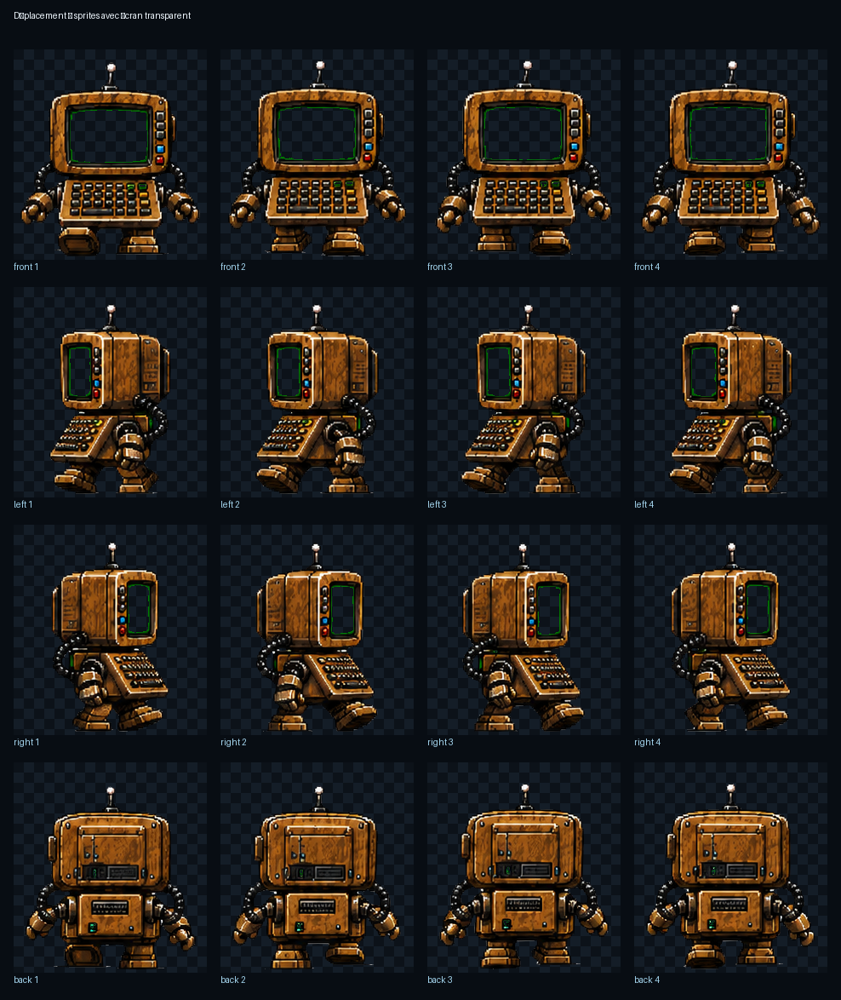 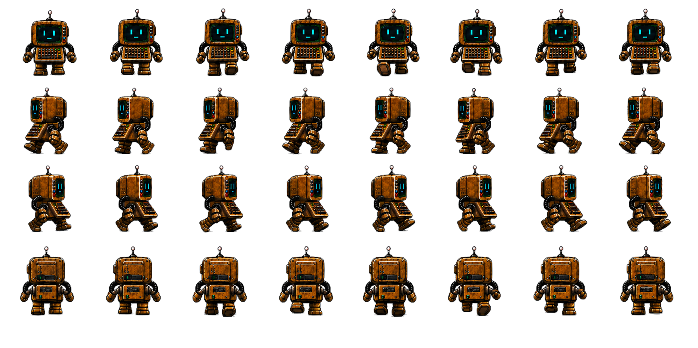 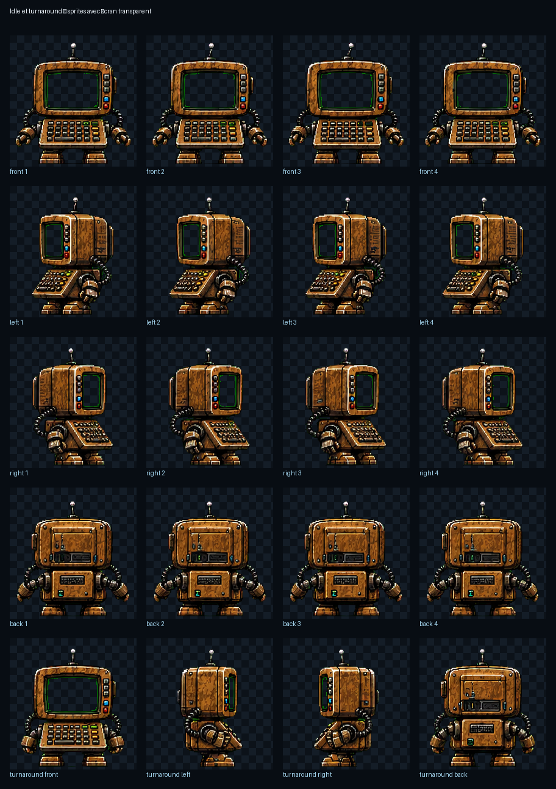 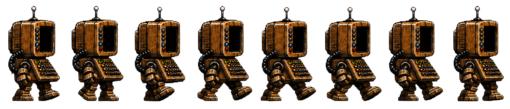 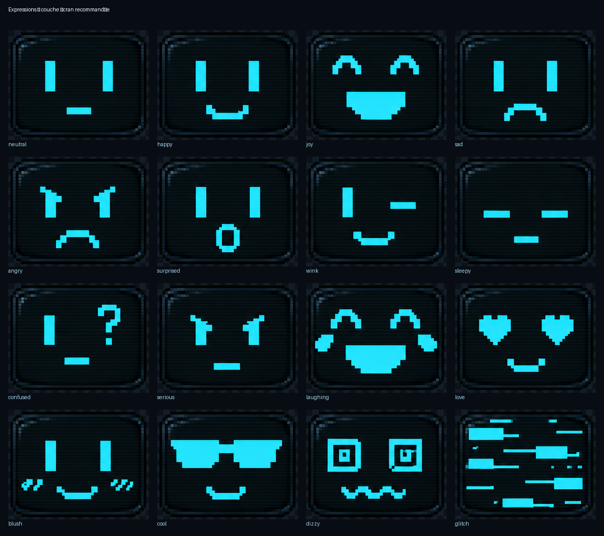  |
| Animation tuner local | 5 | archives/web/lemegeton-animation-tuner/ |
| Sources anciennes / atlases generatives | 9 | archives/sources/lemegeton-sprite-pack/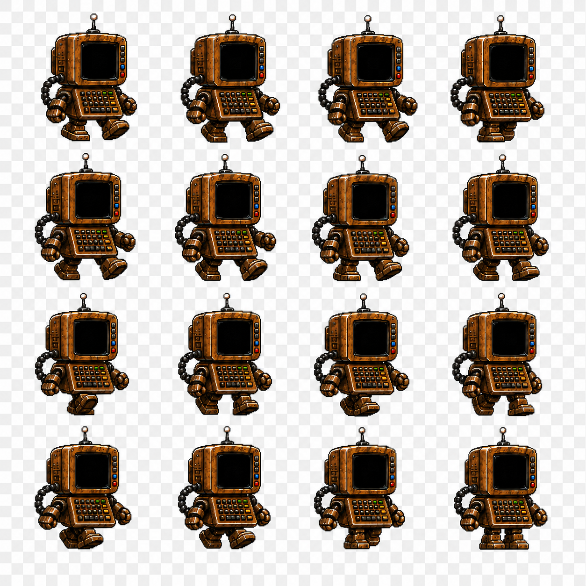 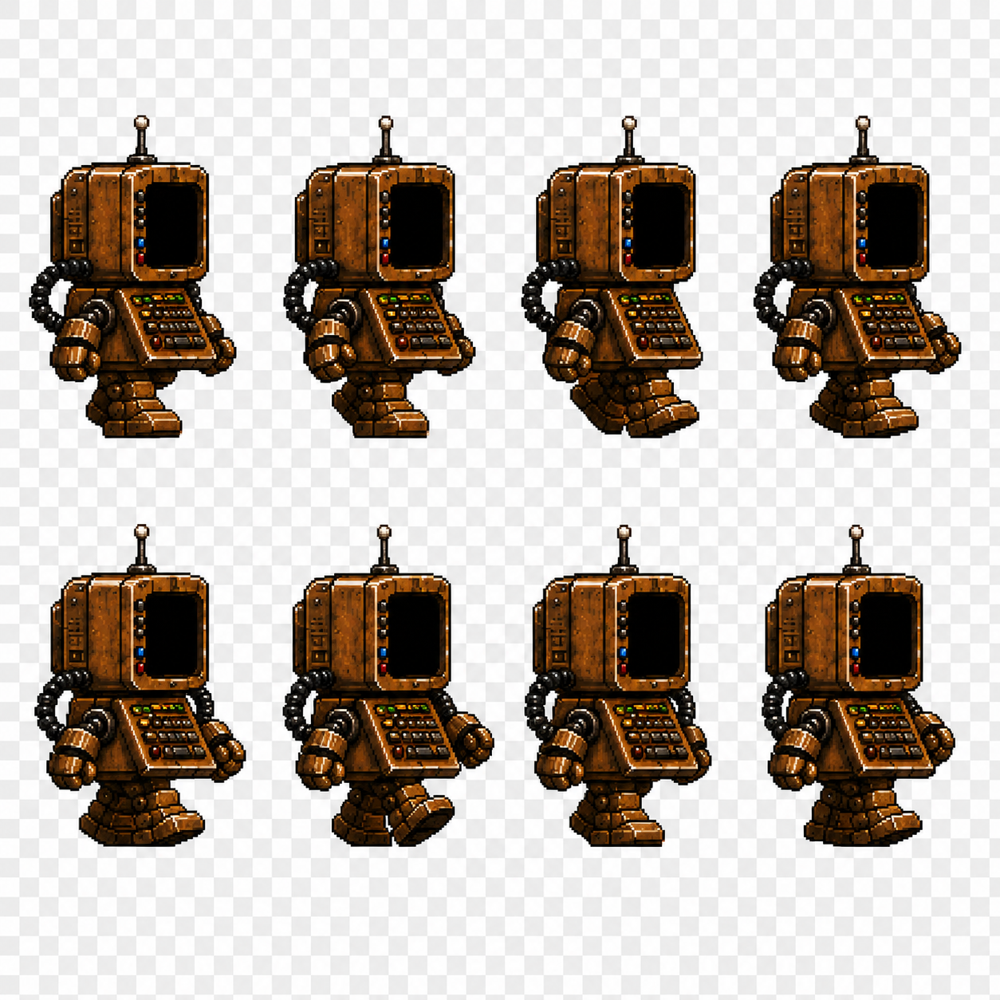 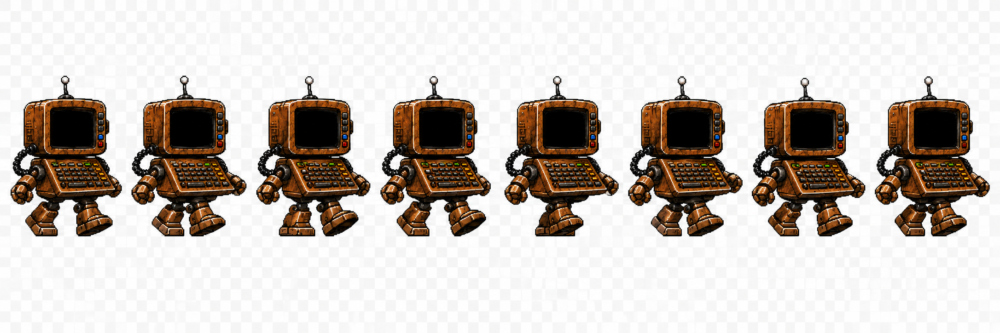 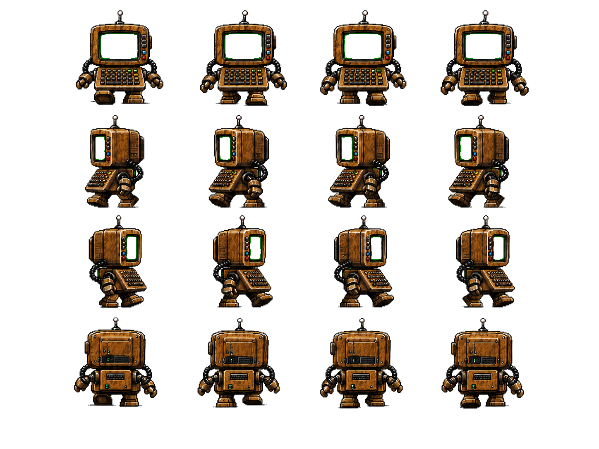 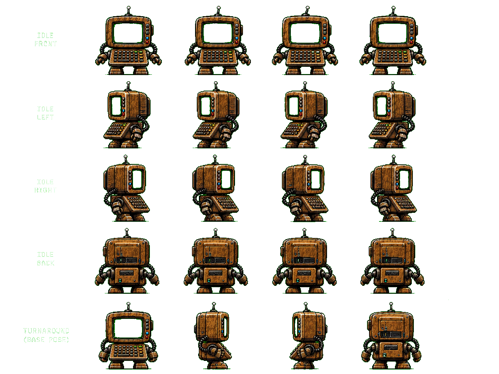 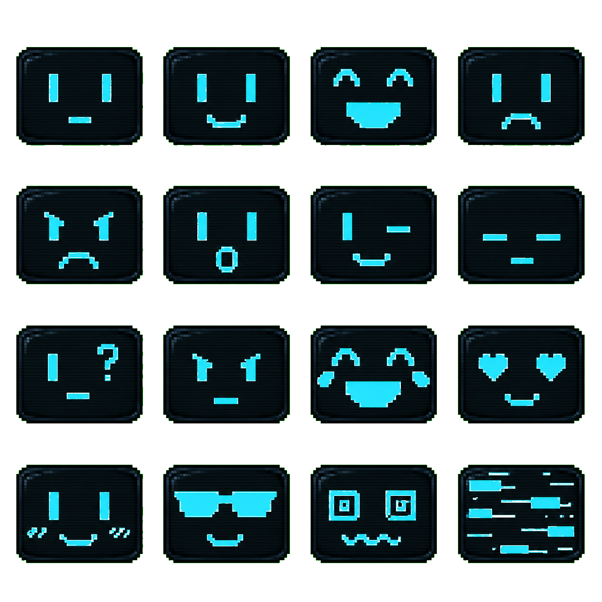 |
| Doublons exacts LEME | 4 | archives/import-duplicates/2026-07-15-lemegeton-sprite-pack/ 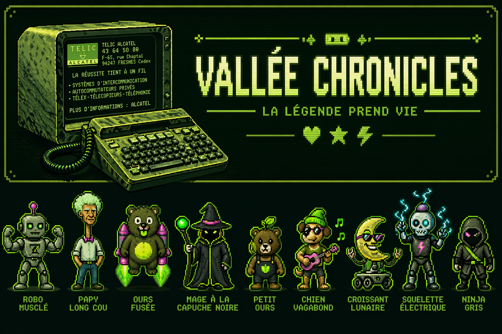   |
| Images racine import classees | 4 | assets/      , , media/     et et archives/import-duplicates/.png) .png) .png) .png)  .webp) |
Decisions de classement
- Les frames exploitables du robot Minitel Lemegeton sont maintenant sous
assets/characters/lemegeton/ pour que la galerie les expose comme assets personnage. - Les visuels d'inspiration non dupliques restent consultables dans
media/visual/references/lemegeton-inspiration/. - Les quatre references MINI STAR BOT identiques aux references LEME deja suivies ont ete archivees comme doublons, pas re-publiees en galerie.
- Le mini outil
Lemegeton Animation Tunerest conserve comme archive web autonome. - La page preview source a ete corrigee pour retirer des references a des GIF absents du lot.
Images racine du sas
| Source | Destination | Traitement |
|---|---|---|
imports/20250729_0300_Mystic Mask Unleashed_remix_01k19tyxa9fj59aq7j4xet7845.png | assets/cards/reference/the-mask-of-sorn-ultra-rare-reference.png | Reference TCG / Sorn |
imports/ChatGPT Image 19 nov. 2025, 17_10_28.png | media/visual/references/sorn/sorn-red-sigil-reference.png | Reference visuelle Sorn |
imports/ChatGPT Image 19 nov. 2025, 17_10_28.jpg | archives/import-duplicates/2026-07-15-imports-root/sorn-red-sigil-reference-format-copy.jpg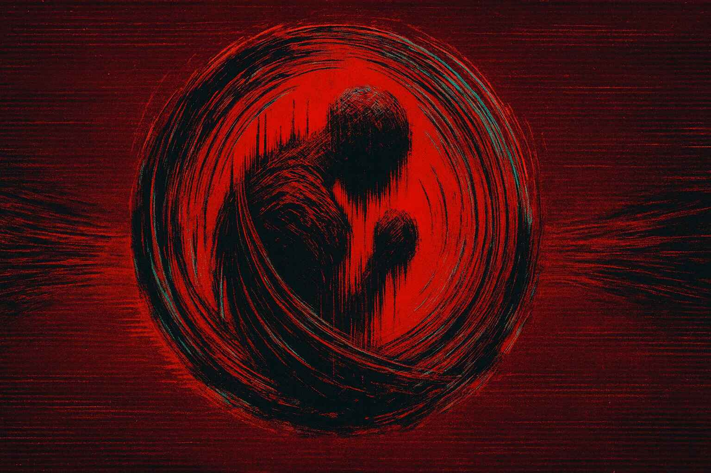 | Variante JPG archivee |
imports/ChatGPT Image 19 févr. 2026, 01_01_19.png | archives/import-duplicates/2026-07-15-imports-root/hermine-logo-reference-v003-exact-copy.png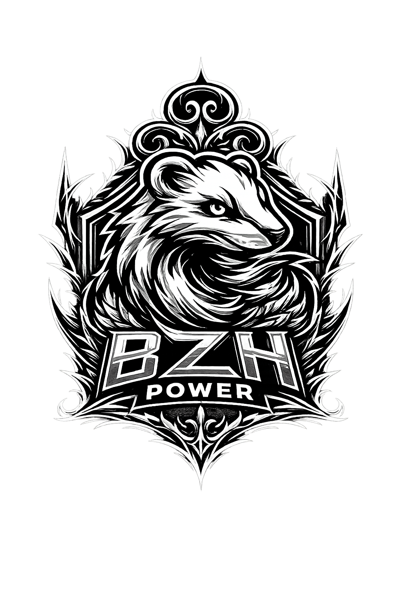 | Doublon exact Hermine |
Traces
- Doublons :
archives/import-reports/2026-07-15-import-duplicates.csv - Page hub :
docs/archives/import-lemegeton-sprite-pack.md - Galerie media :
media/gallery/index.html